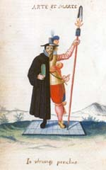
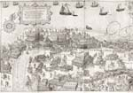
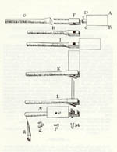
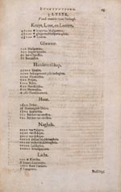
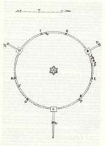

OOSTENDE VERLOREN, SLUIS GEWONNEN, 1604
Tentoonstelling in de Universiteitsbibliotheek van 12 augustus - 12
september 2004
Samenstelling: Dirk de Vries
Met bijdragen van Charles van den Heuvel, Anton van der Lem en Piet Lombaerde
De legertent als bibliotheek. Vroeg zeventiende-eeuwse theorieën over legerhervormingen en logistiek in het veld.
Charles van den Heuvel
Arte et Marte
|  | Arte et Marte. Half geleerde en half soldaat als personificatie van wetenschap en militaire kunsten. Jacques Wijts, 24 april 1607, in het Album Amicorum van Ernst Brinck (Den Haag, KB, Ms. 135 M 86, p. 174). |
De militaire successen van Maurits (samen met die van Willem Lodewijk en indirect ook die van Oldenbarnevelt) zijn in de literatuur in verband gebracht met legerhervormingen en tactische vernieuwingen mede op basis van een wetenschappelijke benadering van de oorlogskunsten uit de Oudheid. Deze wetenschappelijke benadering van de oorlogskunsten van de Nassaus kent een lange voorgeschiedenis. De krijgskunde maakte deel uit van de opvoeding van de Nassaus in Dillenburg. Jan VI hield er persoonlijk toezicht op dat zijn zonen en neven, onder wie Maurits, lessen kregen in Frans en Latijn, in godsdienst werden onderricht, leerden paardrijden en schermen en dat ze natuurlijk werken over de oorlogskunsten lazen. Aan de universiteit van Leiden, waarvan de oprichting in de woorden van Willem van Oranje als een ‘vast blochuys’ in het teken van de Tachtigjarige Oorlog had gestaan, zou Maurits zijn opleiding voortzetten. De filoloog en filosoof Justus Lipsius was een grote trekpleister van de jonge universiteit. Mogelijk maakte Lipsius tijdens zijn verblijf van 1578-1591 aan de Leidse Universiteit Maurits bekend met de belangrijkste theorieën over de oorlogsvoering uit de Oudheid van Aelianus, Polybius, Vegetius, Leo VI Imperator en anderen. In ieder geval zou Lipsius na zijn vertrek naar Leuven deze theorieën uitvoerig becommentariëren in zijn De Militia Romana (Antwerpen, 1596).
Maurits en Stevin
Maurits’ studententijd werd abrupt afgebroken toen er door de moord op zijn vader Willem van Oranje op 10 juli 1584 grote verplichtingen wachtten. Of Maurits tijdens zijn verblijf in Leiden vanaf 1582 ook Stevin ontmoette is onbekend. Mogelijk is dat wel. Stevin woonde er reeds voordat Maurits zich had ingeschreven en komt in 1583 zelf in de registers van de universiteit voor. Hoe het ook zij, Maurits stelde rond 1593-1594 Stevin als zijn leermeester aan en voegde hem als kwartiermeester toe aan het Staatse leger. Vanaf dat moment zijn ze regelmatig samen op militaire campagne en moet Stevin bij de meeste, zo niet alle belegeringen aanwezig zijn geweest. Uit Stevins geschriften blijkt dat hij de belegeringen van Hulst (1591), Grol (1597), St. Andries (1600) en Oostende (1601-1604) in ieder geval tot in de kleinste details kende. In 1604 werden op respectievelijk 9 en 12 mei IJzendijke en Aardenburg ingenomen, voordat de Spanjaarden in Sluis na een beleg van drie maanden uiteindelijk op 19 augustus op de knieën werden gedwongen. In de periode voorafgaand en volgend op de inname van Sluis komen we Maurits en Stevin enkele keren tezamen in het huidige Zeeuwsch-Vlaanderen tegen. Ze spraken er over veldversterkingen die Stevin zelf had ontworpen en over de aanleg van nieuwe fortificaties voor de ingenomen plaatsen, waarvoor hijzelf en andere ingenieurs tekeningen leverden. Kortom, tot kort voor het verschijnen van het eerste deel van de Wisconstighe Ghedachtenissen in 1605 waren Maurits en Stevin vrijwel voortdurend samen in het veld. Tijdens de vele uren die ze in de vele belegeringen samen moesten doorbrengen, hadden Maurits en Stevin wellicht tijd voor studie. Tegelijkertijd betekende dit ook dat ze minder in de gelegenheid waren om hun notities goed vast te leggen en de teksten, die alleen maar toenamen, uit te geven. Dat verklaart waarom er van het voornemen van Stevin om de oorspronkelijk voor de Wisconstighe Ghedachtenissen bestemde teksten alsnog uit te geven, pas veel later en dan nog maar ten dele, iets terecht zou komen.
Hoewel het door de vele militaire campagnes moeilijker werd om manuscripten drukklaar te maken, bleek de praktijk van oorlogsvoering juist ook een belangrijke voedingsbodem voor nieuwe theoretische bespiegelingen. Het kan geen toeval zijn dat de twee enige werken die Stevin nog sinds de Wisconstighe Ghedachtenissen zou publiceren, Castrametatio. Dat is Legermeting en Nieuwe Maniere van Sterctebou door Spilsluysen, beide van 1617, gewijd waren aan militaire onderwerpen. Enkele jaren daarvoor, in 1614, verscheen de Fortification ou architecture militaire tant offensive que défensive van Samuel Marolois, dat naast een uiteenzetting over het Nederlandse vestingbouwkundige systeem ook beschrijvingen en afbeeldingen van legerkampen bevatte. In 1624 verscheen de Korte beschrijvinge ende afbeeldinge van de generale regelen der Fortificatie etc. van Hendrik Hondius, waarvan het derde deel is: ‘handelende van de Officieren, van den Treyn (kolonne), van de Artillerie, Munitien ende Vivres (proviand) etc.’ en wordt geïllustreerd aan de hand van de Slag bij Nieuwpoort. Ten slotte moet nog het werk genoemd worden van de kwartiermeester van Ernst Casimir, David de Solemne, La charge du Mareschal des logis.
|  | Beschrijvinge ende Figuerlijcke afbeeldinghe, belangende het Marcheren van den heelen Treyn’ toegelicht aan de hand van illustratie Slag bij Nieuwpoort in H. Hondius, Korte beschrijvinge ende afbeeldinge van de generale regelen der Fortificatie, Den Haag, 1624, Leiden UB, 415 A 13, plaat tussen pp. 50-51 (detail). |
Al met al niet zoveel publicaties, die bovendien pas lang nadat de hervormingen in het Staatse leger waren doorgevoerd het licht zagen. Zo kreeg David de Solemne al in 1614 en 1615 octrooien van de Staten-Generaal voor de tekeningen die in zijn boek werden gebruikt, in 1626 voor de uitgave van het gehele boek, dat uiteindelijk pas in 1632 bij Hondius in Den Haag verscheen. De schaarse en late verschijning van dergelijke teksten betekent echter niet dat er geen eigentijdse aandacht voor de legehervormingen bestond. ‘Nadien van ouden tijden, en ooc over korte jaren herwaerts, veel en wel vande Leghermeting geschreven is, als wesende een der voornaemste deelen des Krijchs’ schreef Stevin in het voorwoord van zijn Castrametatio, en inderdaad worden er nog altijd veel handschriften over legerhervormingen in Nederlandse, maar ook buitenlandse bibliotheken bewaard.
Allereerst zijn er de afschriften van de ongepubliceerde teksten over de militaire kunsten die Stevin niet had opgenomen in zijn Castrametatio. Dat is Legermeting en Nieuwe Maniere van Sterctebou door Spilsluysen. Hoewel Stevin het belangrijk had gevonden deze twee werken apart uit te geven, zette hij het idee van een integrale publicatie over de militaire kunsten, die hij in de Wisconstighe Ghedachtenissen had aangekondigd, nimmer over boord. Waarschijnlijk kreeg hij na het Twaalfjarig Bestand hier meer tijd voor. In ieder geval bleef Stevin tot aan zijn dood in 1620 nieuwe teksten toevoegen, en daarmee moet ook het idee verder zijn gegroeid om de onvoltooide, oorspronkelijk voor de Wisconstighe Ghedachtenissen bestemde verhandelingen als een apart traktaat uit te geven. Deze Crychconst moest uit twee delen bestaan: ‘Van de Cryghconst te lande’ en een ‘te water’. Van dit laatste werk waren reeds in de zeventiende eeuw alle sporen verdwenen, maar fragmenten bestemd voor de ‘Crychconst te lande’ kwamen tezamen met ongepubliceerde teksten over andere onderwerpen bij tijdgenoten terecht en werden deels postuum gepubliceerd. Dankzij een inventarislijst die de Zeeuwse geleerde Isaac Beeckman enkele jaren na de dood van Stevin van zijn handschriften samenstelde, weten we dat het merendeel aan de militaire kunsten was gewijd. Ook Simons zoon, Hendrick Stevin, stelde zich ten doel, zoals hij aangeeft in het handschrift 128 A 9 I in de Koninklijke Bibliotheek in Den Haag: ‘[…] om de rest van de Crijchconst van mijn Vader Za: in oirden te brenghen’. In dezelfde bibliotheek bevinden zich diverse andere afschriften van Hendrick Stevin van het werk van zijn vader. Handschrift 128 A 9 II is getiteld: Eenighe Stucken der Crychconst beschreven deur Simon Stevin, en de titel van handschrift 128 A 10 Vijfde deel der gemengde stoffen van de Krijgkonst herinnert nog sterk aan het onvoltooide hoofdstuk van de Wisconstighe Ghedachtenissen. Fragmenten van deze werken publiceerde Hendrick in zijn Materiae Politicae, Burgherlicke Stoffen, dat in 1649 te Leiden verscheen. Behalve Hendrick Stevin publiceerde Cornelis de Waard passages bestemd voor de Crychconst in zijn uitgave van Beeckmans journaal die Stevins zoon niet in de Materiae Politicae had opgenomen. Ten slotte nam W.H. Schukking in The Principal Works of Simon Stevin. Volume IV the Art of War integraal teksten op die Hendrick Stevin slechts ten dele of zonder illustraties had uitgegeven.
Behalve de afschriften van Hendrick Stevin heeft de Koninklijke Bibliotheek ook nog diverse andere anonieme handschriften, waarin we gedeeltelijk dezelfde titels herkennen: Formen van Logeeringen (128 A 14), Formen van Slachorden (128 A 18), Diverse slagorders (128 A 19), Verscheyden legerkwartieren (128 A 20). Ook in andere Nederlandse bibliotheken bevinden zich anonieme teksten over de militaire kunsten die of aan Stevin zijn ontleend dan wel op een gemeenschappelijke bron teruggaan. In de bibliotheek van het Leger- en Wapenmuseum in Delft bevindt zich het handschrift: Logieringhe, Tochten ende Slachorden [..] 1610 (HB/P 574). In de verzameling van de Sectie Militaire Geschiedenis van de Koninklijke Landmacht (DC 81/1) verwijst de titel: Ruich Ontwerp van Krychssaken ende t’gevolgh van dien. Gelyck het hedendaeges by Haere Excellentie Prins Mauritius van Orangien Grave van Nassau, in die vereenichde Nederlantsche Provintien gebruickt wort mogelijk naar de titel Crychssaken uit Beeckmans inventarislijst van Stevin nagelaten handschriften. Ten slotte zijn er nog teksten in Duitsland en Frankrijk.
Niet alleen omdat de schaarse drukwerken in belangrijke mate op dergelijke handschriften werden gebaseerd, maar juist ook omdat ze tussen de bedrijven van het oorlogstoneel door werden geschreven door mannen van de praktijk, zijn ze zo van belang om beter inzicht te krijgen in de legerhervormingen in het veld. Bovendien geven ze vaak een beter tijdsbeeld dan de drukwerken, omdat deze soms, zoals we zagen met de teksten van De Solemne en Stevin, veel later werden uitgegeven. Tot dat moment werd er gerommeld met de handschriften. Niet zelden werden gekopieerde fragmenten vermengd met latere teksten of commentaren van de bewerkers, al dan niet met vermelding van hun eigen aandeel. Er bestaan dan ook grote discrepanties tussen de inhoudsopgaven van de handschriften en die van de drukwerken. Het is op deze plaats onmogelijk om precies de relaties tussen deze werken aan te geven, en we moeten volstaan met een kort overzicht van een aantal terugkerende thema’s die karakteristiek zijn voor de oorlogsvoering van het begin van de zeventiende eeuw en de belangrijkste legerhervormingen.
Oorlogsvoering en legerhervormingen
Evenals aan het einde van de zestiende eeuw bevatten diverse vroeg zeventiende-eeuwse teksten verwijzingen naar auteurs over de militaire kunsten in de Oudheid. Echter, geleidelijk aan krijgen deze verwijzingen een ander karakter. In plaats van een historisch-filologische reconstructie gaat de aandacht begin zeventiende eeuw meer uit naar de eigentijdse toepasbaarheid. De reconstructie dient nu als uitgangspunt voor de legerhervormingen van het Staatse leger, die vervolgens door praktische ervaringen in het veld worden bijgesteld. Deze hervormingen bestaan uit een complex van maatregelen op het gebied van training, dril en discipline van de soldaten, de organisatie van het leger in het veld en de ontwikkeling van een goed systeem van financiering met tijdige uitbetaling aan de troepen. In een enkel geval worden ook vernieuwende aspecten in de planning en uitvoering van stedelijke fortificaties en met name van veldversterkingen hiertoe gerekend. Maar alvorens we ingaan op deze hervormingen is het zaak kort te wijzen op enkele karakteristieken van de oorlogsvoering in de Nederlanden aan het einde van de zestiende en het begin van de zeventiende eeuw.
De Slag bij Nieuwpoort mag misschien wel het bekendste wapenfeit van de Tachtigjarige Oorlog zijn, maar als de enige grote veldslag is deze zeker niet representatief voor de oorlogsvoering van het Staatse leger. In feite was de Tachtigjarige Oorlog veel statischer, en vooral een ‘strijd’ van belegeren of belegerd worden. De dynamiek bestond veelal uit het reizen over onbegaanbare wegen en het graven van gangen en wallen rondom de belegerde vesting of de veldverschansingen. Hoewel de Slag van Nieuwpoort misschien atypisch was, karakteriseert deze in een ander opzicht de geprezen kwaliteiten van Maurits als belegeraar, die flexibel kon omgaan met landschap en logistiek en waar nodig kleine, maar goed getrainde en vooral wendbare eenheden inzette.
Het landschap speelde een cruciale rol in de Nederlandse oorlogsvoering, transport was vaak alleen mogelijk over de zandruggen of dijken die door de moerassen of geïnundeerd terrein liepen. Door de slecht begaanbare wegen en de afscherming van de accessen door veldschansen, moesten transporten uitwijken naar het water, dat zijn eigen dynamiek kende. Het oorspronkelijke plan van 1600 om het kapersnest Duinkerken te veroveren kon niet doorgaan door de harde wind. Aanvankelijk durfde men niet de Westerschelde op te varen uit vrees direct in Spaanse armen gedreven te worden in het Zwarte gat of het Gat van Sluis. Uiteindelijk landde de vloot van 1450 schepen met ruim vijftienduizend soldaten op de kust van het huidige Zeeuwsch-Vlaanderen, bij de kort tevoren veroverde schans Philippine. Dit hield wel in dat men over land verder moest, en dat had ernstige gevolgen. De troepen konden niet meer vanuit zee worden bevoorraad, en daarop was het betrekkelijk geringe aantal paarden gebaseerd dat de kanonnen moest trekken. Niet alleen was de bevoorrading nu veel moeilijker, ook bleek de verrassing weg. Albrecht van Oostenrijk trok met zijn leger vanuit Gent snel de voorhoede met de cavaleristen onder het commando van Ernst van Nassau tegemoet en richtte een enorme chaos aan. Maurits reageerde prompt en stelde op 2 juli 1600 zijn infanteristen in drie slagordes op, gedekt door kanonnen aan de zeezijde en cavaleristen bij de duinen. Dankzij de wendbare veel kleinere compagnieën, die zich veel makkelijker door het rulle zand bewogen, wist Maurits alsnog de overwinning naar zich toe te halen. De beroemde Slag bij Nieuwpoort en de Tocht door Vlaanderen waren nooit op deze wijze gepland, maar Maurits had het geluk weten af te dwingen door snel in te spelen op de omstandigheden. Het waren deze flexibiliteit en durf om gevestigde theorieën ter discussie te stellen, die ook aan de basis lagen van de legerhervormingen welke Maurits internationale faam zouden bezorgen. De met elkaar samenhangende aspecten: landschap, logistiek en legerorde, die zo’n belangrijke rol in Nieuwpoort hadden gespeeld, vinden we ook terug in de eigentijdse handschriften en drukwerken over de militaire kunsten. We bespreken ze aan de hand van drie metaforen: de vechtende soldaat, de reizende soldaat en de bouwende soldaat.
De vechtende soldaat
De vechtende soldaat is schijnbaar het meest bekende beeld voor ons, maar de contemporaine aandacht voor de Oudheid levert soms verrassende voorstellingen op. Een handschrift van Pierre Bailly met de titel Cort bewijs van ‘t Rapier alleen (KB 72 F 37) toont oefenende schermers naast elkaar in eigentijdse kledij en als Griekse naakten. En verder bevat de Nassausche wapenhandelinge van schilt, spies, rappier ende targe door Adam van Breen schitterende prenten van Staatse soldaten met een soort van Romeinse legionairschilden. Het gebruik bleef echter tot het ceremoniële beperkt, aangezien alleen Maurits’ lijfwacht het targiëschild droeg. Toch was de bestudering van de militaire kunsten van de Oudheid zeker niet alleen kwestie van decorum. In 1594 stuurde Willem Lodewijk Maurits een werk over de slagordes van de Byzantijnse keizer Leo VI Imperator. In de begeleidende brief schreef Willem Lodewijk dat hij deze beter geschikt achtte voor kleinere legers dan de Romeinse voorbeelden die Maurits hem had getoond. Verder werden de leger en commandotermen uit de Oudheid uitvoerig bestudeerd. Stevin schreef een tekst met de titel: Verduytsching van Elianus Griekse woorden. De oefening van dergelijke commando’s moest onder andere leiden tot een automatisme dat continu vuur mogelijk maakte. Wanneer de voorste linie had gevuurd, moesten de musketiers snel naar achteren treden om hun geweer te laden. Op het moment dat ze omkeerden met een leeg wapen waren ze zeer kwetsbaar en moest er direct door de tweede linie worden gevuurd. Om dergelijke bewegingen vloeiend te laten verlopen, werd er geoefend met contramarsen. Dergelijke oefeningen, die niet alleen door infanteristen, maar ook door cavaleristen moesten worden uitgevoerd, vroegen om korte, duidelijke commando’s die tijdens de bewegingen hardop werden uitgesproken. Ook experimenteerde men met de basisopstellingen van de troepen op basis van voorbeelden uit de Oudheid die men vervolgens aanpaste aan eigentijdse eisen. Veelzeggend is de titel van een ongepubliceerde tekst van Stevin, Vande veltslachoirdening met navolginge der Romeinsche wijse en dat met geschut en Crijchlien gewapent na de gemeene manier deses tijts. In plaats van de Spaanse tercio’s, die soms drieduizend soldaten telden, bestonden Maurits’ gevechtseenheden uit zo’n vijfhonderdvijftig man. Interessant in dit verband zijn de experimentele voorstellingen in het hoofdstuk pijckschansen van vurende musketiers en beschermende piekeniers die zich steeds in andere formaties van verschillende grootte, als lopende forten door het landschap bewegen en waarvan de grondvorm aan de omstandigheden wordt aangepast om onder dekking continu te kunnen vuren.
De reizende soldaat
Zoals eerder opgemerkt kwam het zelden tot vechten en waren reizen en graven belangrijkere kenmerken van de dynamiek van de moderne belegeringsoorlog. Ook in het reizen waren landschap, logistiek en legerorde essentiële factoren. Enige cijfers over de reizende soldaat. Om de 13.150 infanteristen en tweeduizend ruiters te vervoeren bij de Tocht door Vlaanderen waren veertienhonderdvijftig schepen en drieduizendvijftig paarden nodig. Om een gemiddeld kanon te verplaatsen waren ongeveer tien paarden nodig, voor de zware kartouwen zelfs meer dan twintig. De verplaatsing van de artillerie, buskruit, proviand vroeg gemiddeld om meer dan negenhonderd wagens in een legertrein van soms twintig kilometer lang. De paarden moesten natuurlijk gevoerd en verzorgd worden, en de soldaten aten onder ideale omstandigheden gemiddeld een brood per dag en dronken sloten bier. Particuliere kooplieden, de ‘soetelaers’, trokken met het leger mee om de soldaten en hun vrouwen en kinderen etenswaar en foerage te bezorgen. Het was de grote verdienste van Maurits dat hij tijdens zijn militaire campagnes rooftochten en plunderingen van de ingenomen steden en omringende landen wist te beperken door een goede logistiek en normale vergoedingen. Diverse teksten zijn gewijd aan de organisatie hiervan. Stevin schreef teksten als Tegen verdruckingen en Vande oirdentlicke buytdeelingh waarin aspecten van oorlogsrecht en militaire tucht werden belicht. Andere titels, zoals Verscheyden Cryghstochten, dadelick van hem gesien ende geordineert, Verclaring der manier van reijsen eens Legers en Vande tochten, herinneren aan de logistieke aspecten van het leger. Dergelijke werken beschrijven hoe de oorlogstrein het beste kon worden geformeerd en hoe de verantwoordelijkheden moesten worden verdeeld. Meestal werd de trein in drie gedeelten opgesplitst: de voortocht bestond uit de artillerie, met de middeltocht ging de proviand mee en in de achtertocht volgde de bagage. Met ieder onderdeel trokken wielmakers en hoefsmeden mee. Een wagenmeester had de supervisie over de gehele trein, terwijl conducteurs de onderdelen controleerden. Elke tocht had een ‘legermeter’, die vooruitging om met ingenieurs kwartier te maken. Daarmee zijn we aangekomen bij de ‘bouwende soldaat’.
De bouwende soldaat
In de Nederlanden was de bouwende soldaat vooral een gravende soldaat. Niet voor niets bedacht Stevin de zogenaamde spabijlhouw, een combinatie van een spade, bijl en houweel, de voorloper van het bekende pionierschopje.
|  | ‘Spabijlhou’, combinatie van spade, bijl en houweel door Simon Stevin (Den Haag, KB, Ms. 128 A 9, I, fol. 28). |
|  | Lyste, vande munitie van Oorlogh’. Lijst van benodigdheden in een legerkamp, in Simon Stevin, Castrametatio. Dat is Legermeting, Leiden 1617 (Leiden UB, 680 A 59, p. 23). |
Maurits’ legerkampen werden internationaal geprezen. Zo schreef Jean de Billon, een van de belangrijkste Franse theoretici van de militaire kunsten van het begin van de zeventiende eeuw, in zijn Instructions militaires (1617): ‘Et je suivray en cela l’ordre que le prince Maurice tient en Hollande, comme le plus beau et le meilleurs qui ayt jamais esté pour les camps fortifiez’. Stevins Castrametatio uit hetzelfde jaar, dat direct in het Frans en Duits was vertaald, heeft in belangrijke mate bijgedragen aan de internationale faam van Maurits’ legerkampen. Vanuit dat perspectief gezien is het merkwaardig dat Stevins werk dat specifiek betrekking heeft op Maurits’ belegeringsoorlogen, niet tijdens zijn leven het licht heeft gezien. In Vant belegeren der Steden en Stercten bespreekt Stevin op systematische wijze de belegering van een stad of fort in de verschillende stadia: ‘vande hinderwering’, het vrijmaken van de omgeving van huizen en versterkingen, ‘van de omringeling’,
|  | Van de omringeling’ Circumvallatielinie met kleine redoutes rondom een stad, naar ontwerp van Simon Stevin in Vant belegeren der Steden en Stercten (Den Haag, KB, Ms. 128 A 9, II, fig. 1). |
Literatuur
Deze studie is gedeeltelijk een samenvatting van de bijdragen die de auteur schreef voor de publicatie naar aanleiding van de tentoonstelling in het Rijksmuseum in 2000, Maurits. Prins van Oranje onder redactie van K. Zandvliet, en voor de catalogus van de Stevin tentoonstelling die in het najaar van 2004 in de Koninklijke Bibliotheek Albert 1 te Brussel wordt gehouden. In beide werken is een uitgebreide bibliografie opgenomen. Verder is veelvuldig gebruik gemaakt van de bijdragen van J.P.C.M. van Hoof, ‘Logistiek in de tijd van de vestingoorlogen’ en van J. van de Craats, ‘Maurits, Stevin en de Legermeting’ in Van marketentster tot logistiek netwerk. De militaire logistiek door de eeuwen heen, Amsterdam 2002 onder redactie van H. Roos. Van belang is ook de discussie tussen J. B. Kist, ‘De erfenis van prins Maurits’ en J.P. Puype, ‘Het Staatse leger en prins Maurits, wegbereider van de moderne legers’ in Armamentaria 2000, resp. p. 23-31 en p. 33-47. Specifiek voor Zeeuwsch-Vlaanderen: B. Cox, ‘Vanden Tocht in Vlaenderen’. De logistiek van Nieuwpoort 1600, Zutphen 1986 en voor de werken over de militaire kunsten van Simon Stevin: W.H. Schukking, The Principal Works of Simon Stevin, Vol. IV, The Art of War, Amsterdam 1965. Voor de ingenieurs en fortificatiewerken in Zeeuwsch-Vlaanderen: F. Westra, Nederlandse ingenieurs en de fortificatiewerken in het eerste tijdperk van de Tachtigjarige Oorlog, 1573-1604, Alphen aan den Rijn 1992, en idem, ‘Bestaan er getekende militair-topografische kaarten of vestingplannen van Simon Stevin?’ in Caert-Thresoor 12 (1993), p. 82-86.
| vorige pagina | volgende pagina |